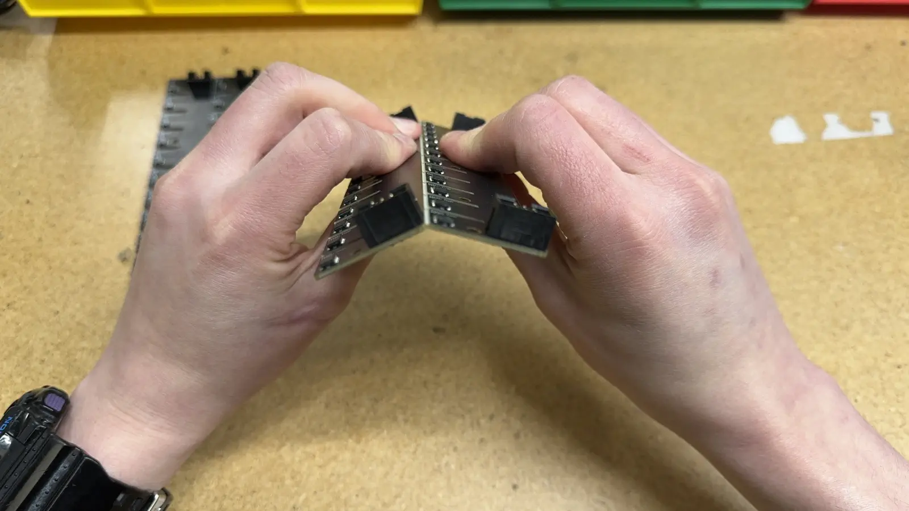
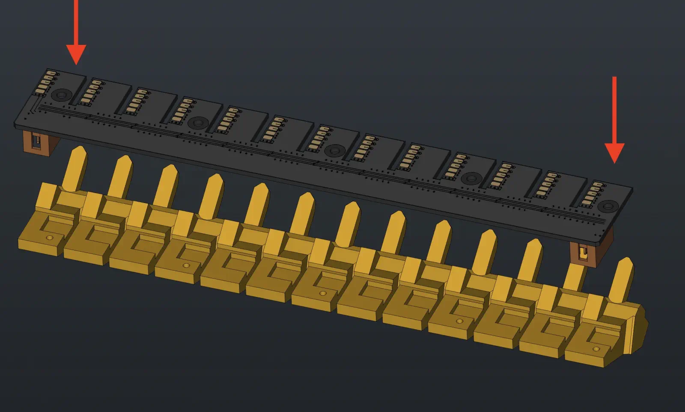
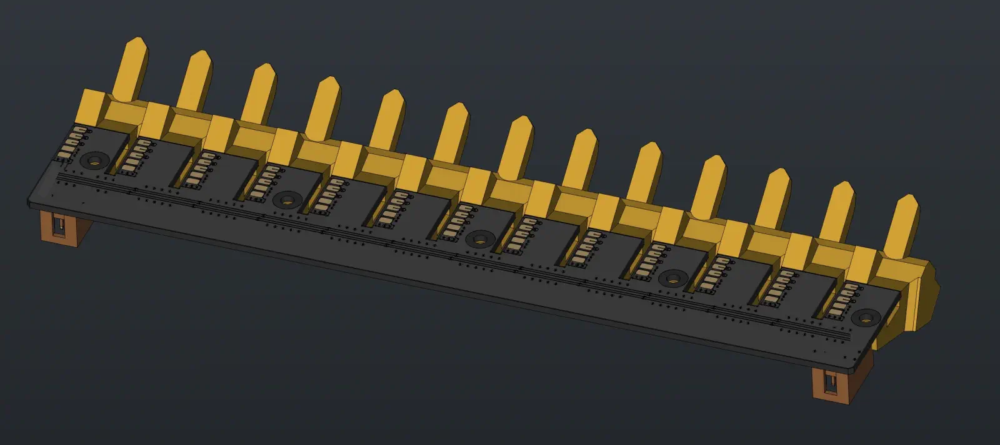
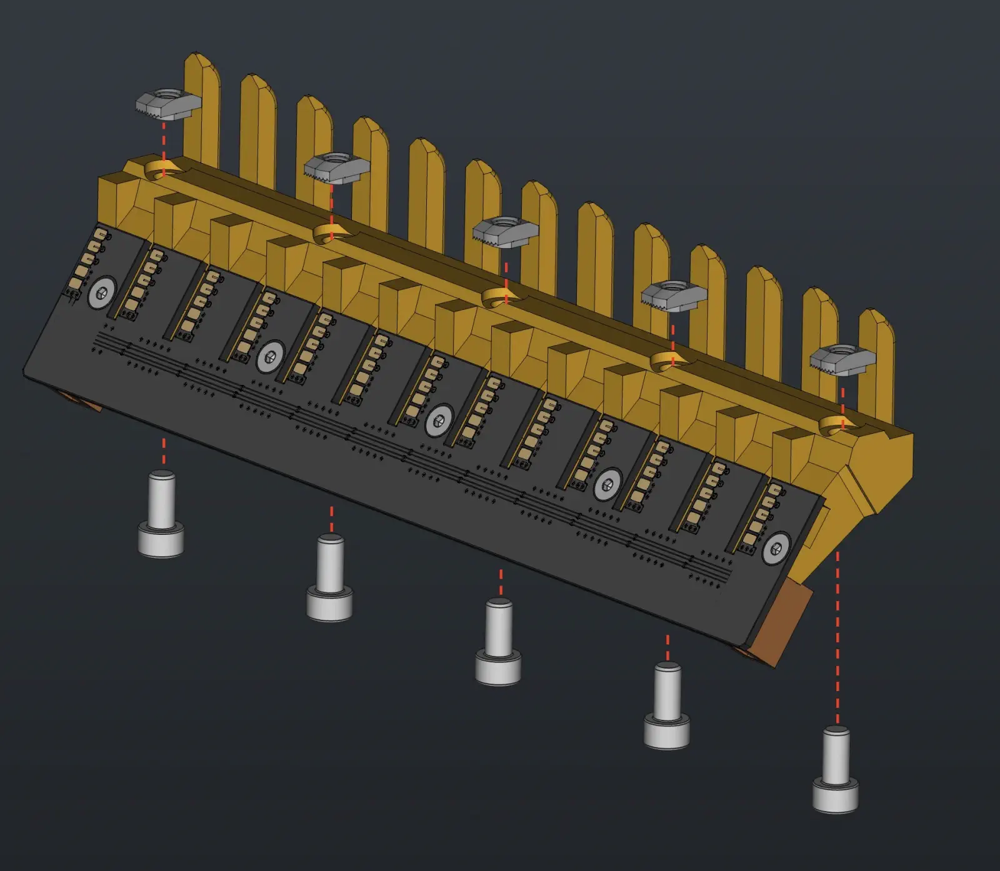
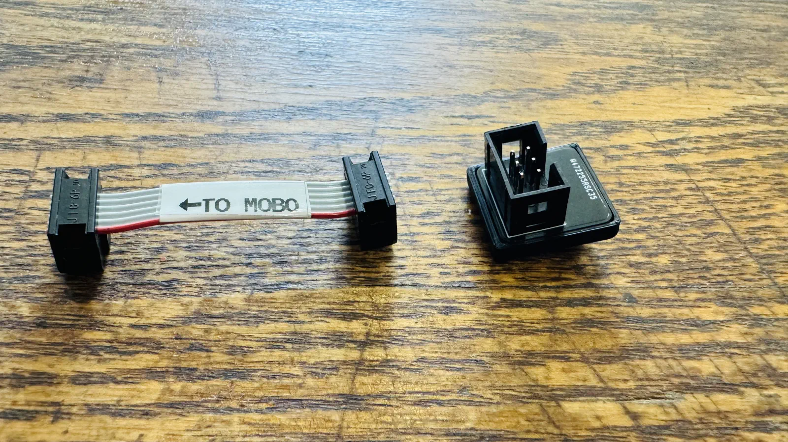

Feeder Connection Kit
This page will guide the reader on how to properly prepare a feeder-connection-kit, from initial assembly to final packaging.
feeder-blade-panel (PCBA)
This section will guide the reader on how to properly create a feeder-blade-panel (PCBA)
SMT
- Paste blade panels three at a time.
- Load three pasted blade panels into the Blade Lumen
- Run the job in OpenPnP
- Remove the panels and reflow them in the oven one at a time
- Inspect for any shorts or shifted components and rework as needed
- Add the 120R termination resistor to the 50th slot position if needed
- Place the completed
feeder-blade-panel (PCBA)units into the yellow bin found at the blade assembly work station
Programming
- Grab the stylus from the blade programmer
- Ensure that the address is set to
1- You can adjust the address with the buttons to the right of the screen
-
Place the spring pins of the stylus against the pads on
Slot #1- Make sure the orientation matches as shown below:

- Make sure the orientation matches as shown below:
-
Press the switch on the stylus when all spring pins are compressed against the pads
-
Look at the screen:
The programming step failed if you see anything other than a
successmessage- The jig is capable of detecting shorts, and will fail programming if one is detected
- The screen will display which pin it sensed has shorted
- If a failure is observed perform any necessary cleanup and try again
- Note that the jig will remember the last place you left off
If the programmer reads
1 - SUCCESSproceed to the next slot position - The jig is capable of detecting shorts, and will fail programming if one is detected
-
After successfully programming address
1, repeat this step for the next 49 addresses while moving in the following order:
Pink (4th row) → Red (2nd row) → Green (3rd row) → Blue (1st row)Pay extreme attention to avoid programming any slot with the wrong value
QC
Ensure your completed PCBA meets the following requirements:
-
Switch the programmer to
QC Modeand confirm that Slots #1, #13, #23, #26, #38, #48, and #50 each have a programmed value that matches the top-side silkscreen textFor example:
Confirm that Slot #26 is actually programmed as Slot #26
-
Gold spring finger pads are free of damage
Place each quality checked feeder-blade-panel (PCBA) into the appropriate QC bin:
Place all QC passing feeder-blade-panel (PCBA) units into the green QC bin
Place all QC failing feeder-blade-panel (PCBA) units into the red QC bin
Be sure to label each defective unit with any issues it has
The next step is to proceed to Feeder Blade Set Final Assembly
Feeder Blade Set Final Assembly
This section will guide the reader on how to properly assemble and package a feeder-blade-set
Materials Prep
- Check 2x
blade-12and 2xblade-13using the granite block to ensure the print printed without warping
Assembly Process
-
Begin by separating a
feeder-blade-panel (PCBA)into four separate rows  -
Install each
blade13-pcbinto ablade133D print to createfeeder-blade13-asm  -
Set
feeder-blade13-asminto thefeeder-blade-cradle-jig -
Proceed to install 5x
M3x8-self-threading-screwinto the WIPfeeder-blade13-asm- Use an automatic torque driver set to
6
- Use an automatic torque driver set to
-
Remove the blades from the
feeder-blade-cradle-jig -
Loosely install 5x
M5-t-slot-nutand 5xM5x10-boltinto each feeder blade for subsequent use in mounting onto a feeder rail  -
Repeat these above steps until you have created 2x
feeder-blade13-asmand 2xfeeder-blade12-asm- The steps to make the
feeder-blade12-asmare the same as the 13-gang version, the only differences are that the 3D print and PCB are a 12-slot variant.
- The steps to make the
Once all 4 assemblies have been prepared, you have finished building a feeder-blade-set
Next Steps
The next step is to proceed to either:
- Feeder Connection Kit Accessories - provided you are making a Feeder Connection Kit
- Front-feeder-rail / Rear-feeder-rail Assembly - provided you are making a LumenPnP
Feeder Connection Kit Accessories
This section will guide the reader on how to properly prepare the accessories that go into a feeder-connection-kit.
bagged-extrusion-cable-clips
-
Place 10x
extrusion-cable-clippieces into a3x4-bagbefore sealing it shut -
Place each
bagged-extrusion-cable-clipsset into a yellow NEEDS QC bin while it awaits inspection -
Weigh each
bagged-extrusion-cable-clips, confirming it weighs19.9g -
Place the
bagged-extrusion-cable-clipspieces that pass weight check into a green QC-Pass bin
Hex Key for Drive Wheel Adjustment
-
Adhere a "hex key bag label" onto a
2x3-bag -
Place a hex key into the plastic bag before resealing it
Collect feeder-blade-harness-set
-
Collect a
feeder-blade-harness-set[ASM-0079-02] from inventory
Feeder-cable-adapter
Assemble feeder-cable-adapter
- Create a
50mm-idc-ribbon-cablethat matches the image below - Assemble
feeder-blade-idc-adapter-pcba -
Glue
blade-adapter-pin-coveronto the PCBA -
Connect
50mm-idc-ribbon-cabletofeeder-blade-idc-adapter-pcba
Packing feeder-cable-adapter
- Add 1x
feeder-blade-idc-adapterand 2xblade-jumper-v4into2x3-bag
- Seal bag shut
If the feeder-cable-adapter is being prepared for individual sale, adhere a build-number-sticker to the outside of the packaging
These assemblies can now be set aside for further use in packout
Packaging Feeder Connection Kit
This section will guide the reader on how to properly package a feeder-connection-kit
Prep the cardboard tray
-
Apply hot melt glue to inside faces of
feeder-accessory-tray -
Immediately after gluing, folding
feeder-accessory-tray
Package feeder-connection-kit
-
Install the following items into the
feeder-accessory-tray:feeder-blade-set-
feeder-blade-harness-setDO NOT MIX THIS UP WITH THE
feeder-slot-cable-harnessWE USED TO USE HEREALSO BE SURE IT IS REWORKED TO INCLUDE JUMPERS
-
feeder-connection-kit-add-ins feeder-programmerbagged-extrusion-cable-clipsdrive-wheel-adj-key
The above photo forgets to show the bagged
drive-wheel-adj-key -
Add some foam to the
feeder-connection-kittray to protect the items in transitThe foam shown in use here is 3 pieces of foam covering from 2020 aluminum extrusion